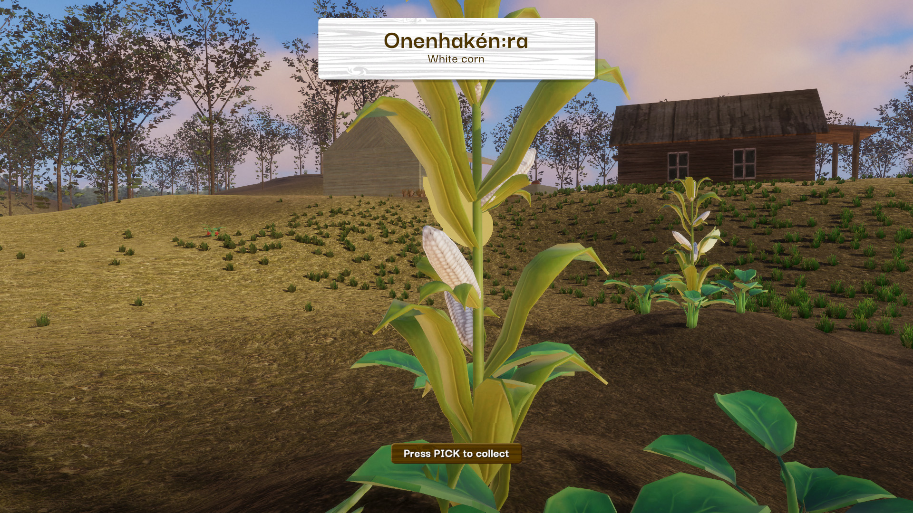
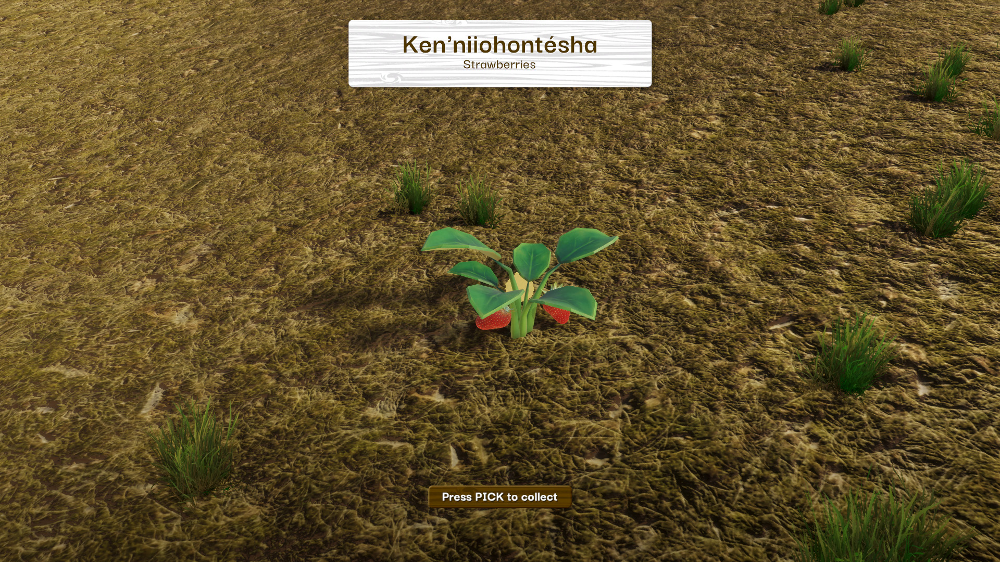

Introduction
Hello! Thank you for stopping by. Please make yourself at home.
My name is Steve Tekaronhiake Diabo. I'm an Indigenous (Kanienkehà:ka/Mohawk) web and game developer, UX and visual designer, creative technologist, experimenter, thinker and tinkerer.
Professionally, I have been making custom digital experiences, websites and apps for almost 20 years. I've been lucky enough to work on a number of great projects throughout my career, using a variety of tech to design, prototype, and develop many kinds of experiences for many kinds of users.
In addition to design and development skills, I also have a deep understanding of all parts of a project cycle, which enables me to develop my own visions into reality. I've successfully built and deployed my own websites, interactive art experiences, online experiences, and other forms of software.
I'm excited to share the details of my newest and biggest project, and to tell you how we got to this point.
Back to Top
What is Onénhsto?
Onénhsto (Corn Soup) is the first of a series of Kanien'kéha educational adventure games, teaching our language, culture and history, through the sharing of traditional knowledge.
In this game, you are cast into the role of a young Mohawk boy, spending time with his To'ta (Grandmother). Around her house, and in the garden, are all the ingredients necessary to make her famous corn soup. Forage and collect all of the ingredients, and don't forget to find the recipe book too!
As you explore the level, you will come across corn and beans in the garden, wild strawberries in the woods, and much more. As you approach these items, the word for the item appears in Kanien'kéha.
By collecting all of the ingredients and the recipe book, you can learn how to make Mohawk corn soup, based on traditional recipes handed down over generations. Additional items found in the level, like strawberries, can unlock additional surprises!
Onenhsto is a "slow play" style game, encouraging the player to take their time. There's no game timer, high score, or even any moments of tension. Players are instead incentivized into being aware of their environment, being present in the moment, and acting in harmony with nature. This style of play is designed to immerse the player in an authentic traditional Haudenosaunee experience.
Onénhsto is developed using the cross-platform Unity game engine. This enables relatively easy deployment on many platforms (Windows, Mac, Android, iOS) using a shared codebase.
This codebase is modular in other ways too – the game mechanic, storyline, art and UI can be updated for new adventures, or localized into other languages, to support other forms of Indigenous storytelling and propagate other forms of traditional knowledge.
Future episodes are in the works. These editions could feature storylines based around tapping trees for maple syrup, fishing, identifying and using plant medicine, and much more!
Back to Top
The story of Onénhsto

The vision for this game was conceived during ImagineNATIVE's Land Jam game hackathon in June 2022. Myself and a team of others all happened to have roots in different Mohawk communities, which led us to think about ways to propagate and teach our language, culture and traditions to other Mohawks displaced from communities, especially children. The idea to create an educational children's adventure game was born.
Over the course of Land Jam, we got to work.
Nathan Powless-Lynes designed a great 3D level, with a house situated along a meandering river, a garden next to it with vegetables, and other features to explore. Maize Longboat crafted dialogue and storyline. I created game menus and UI.
By the conclusion of the hackathon, we had most of the building blocks of our game completed – but the limited amount of time afforded by the rules of the hackathon meant that our game wasn't yet playable.
With the permission of the rest of my Land Jam team and from the organizers at ImagineNATIVE, I continued to develop the game. I was aiming to get it completed to a "playable demo" level in time for exhibition in the interactive space at the ImagineNATIVE festival in October.
What happened over the next 3 months stretched my abilities into new territories.
I undertook a lot of learning to leverage my web development skill set for the new task of building a 3D game. This involved code review, tutorial consumption, experimentation and prototyping. What I couldn't fully develop on my own, I broke down into manageable tasks and enlisted help from some Unity developer friends and colleagues. In turn, I gleaned additional learning from reviewing the approaches they took and the code they wrote. I reached out to my partner Jenn to create some art for the characters and items in the game.
As it currently exists, Onénhsto is the product of an ImagineNATIVE-sponsored hackathon event, taken to completion through passion, hard work, and close collaboration between developers, creatives and educators, all working toward a common goal.
Back to Top
The need for teaching tools like Onénhsto

There exists a need for games, teaching tools and educational experiences tailored for today's Indigenous youth.
Particularly among displaced Indigenous youth in Canada and North America, there is a lack of resources to foster online, virtual or extended community. Opportunities via technology for these youth to feel Indigenous community and belonging are in short supply.
By creating an educational experience packaged as a fun, modern game, we can reach youth living on First Nations communities as well as off, offering all of them the experience of learning their language, culture and tradition, woven together into a compelling interactive story.
This method of developing Indigenous identity through teaching multiple facets of language, culture and history simultaneously, is similar to the way elders have always taught the next generation.
Back to Top